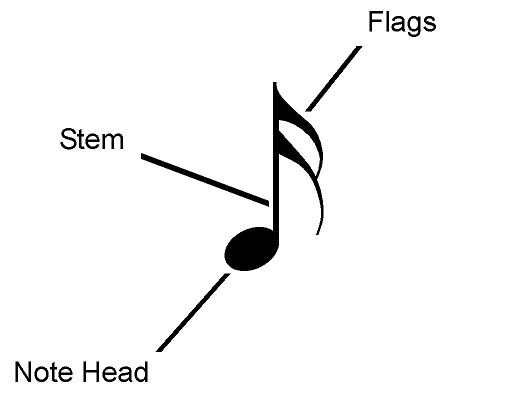
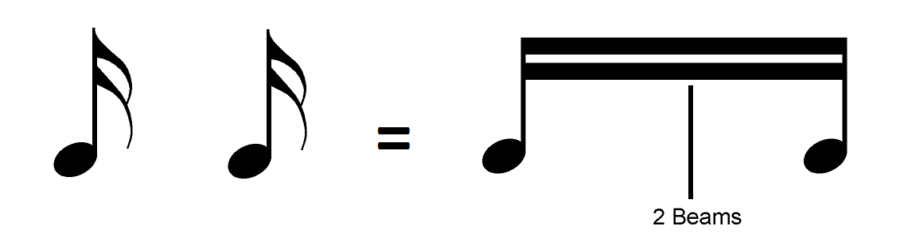

Note Breakdown
Notes are made up of up to three parts: the note head, stem, and flag. Every note has a head. It’s the round part of a note. The vertical line attached to the note head is called the stem. The little curly line at the stem is the flag. Only some notes have flags.
Beams
Instead of each note getting its own flag, notes with flags can also be connected to each other with a beam. This is just another, more organized and faster way of writing notes with flags.
Example:
Two semiquavers can be written as each having two flags, or as connected by two beams.
It doesn’t matter which way they are written. They would sound the same when played.